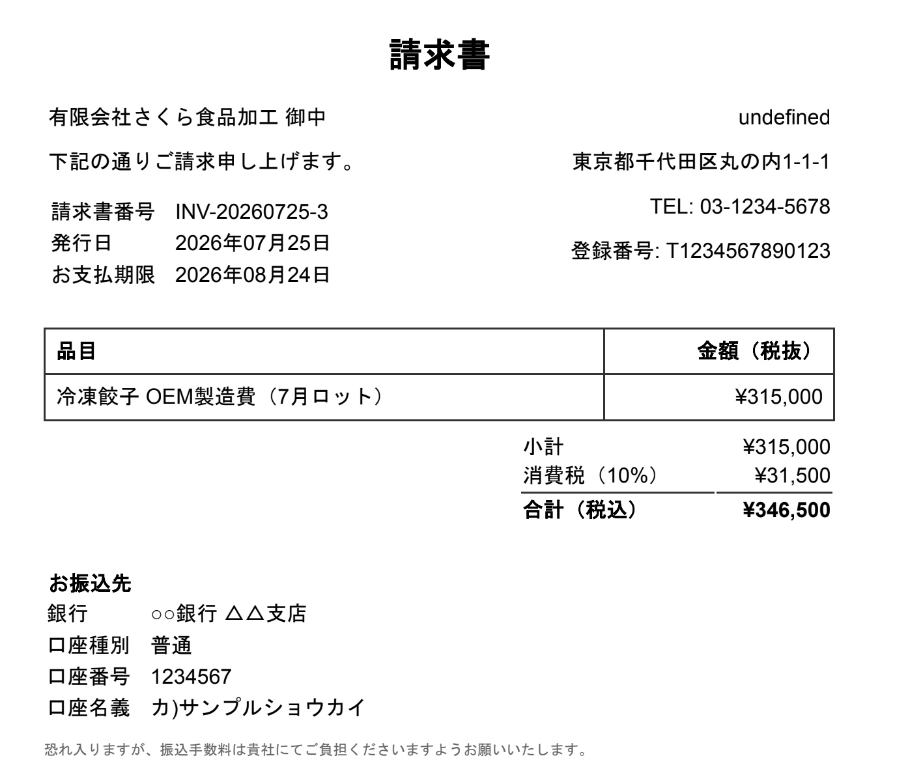
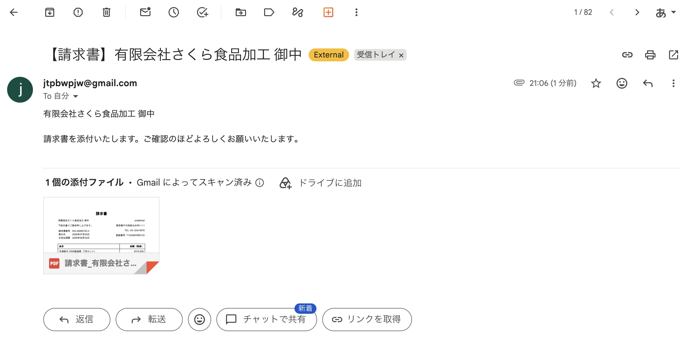
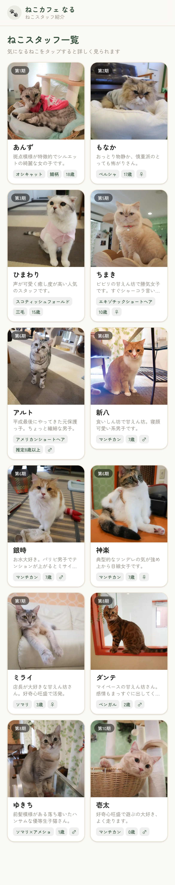

01
予約受付〜前日リマインドの自動化
お客様からの予約を、普段お使いのアプリで自動的に受け付けられるようになります。内容はいつものカレンダーに自動で反映されるので、新しい管理画面を覚えたり、予約の二重登録を確認したりする手間がありません。前日には、忘れないよう自動でリマインドも届くので、無断キャンセルの防止にもつながります。
今回はLINEとGoogleカレンダーで組んでいますが、普段使っているツールに合わせて構成できます。
今業務で使っているツール類（LINEやスプレッドシート、Gmail等）はそのままに、その裏にAIを繋ぎ込みます。
新しいツールの使い方を覚える必要はありません。以下は実際に動いているデモですが、あくまで一例です。ここにない業務でも、内容に合わせて組み立てられます。
01
お客様からの予約を、普段お使いのアプリで自動的に受け付けられるようになります。内容はいつものカレンダーに自動で反映されるので、新しい管理画面を覚えたり、予約の二重登録を確認したりする手間がありません。前日には、忘れないよう自動でリマインドも届くので、無断キャンセルの防止にもつながります。
今回はLINEとGoogleカレンダーで組んでいますが、普段使っているツールに合わせて構成できます。
02
いつも入力しているシートやフォームに情報を入れるだけで、必要な項目がすべて揃った請求書が自動で作成され、そのまま送付まで完了します。転記も、PDF化も、メールの宛先確認も要りません。


今回はスプレッドシートとメールで組んでいますが、普段使っているツールに合わせて構成できます。
03
録音データを所定の場所にアップロードするだけで、自動で聞き取りやすく整えられ、いつも使っている連絡ツールに配信されます。内容を要約するのではなく、聞き取りにくい部分を整えるだけなので、決定事項や発言の抜け漏れがありません。
今回はGoogleドライブとSlackで組んでいますが、普段使っているツールに合わせて構成できます。
これらは自動化の一例です。実際に何を自動化すべきかは、まず一緒に業務を棚卸しして、ネックになっている部分を見つけるところから決めていきましょう。
棚卸しの相談をするWebサイト制作
長野市の猫カフェ「ねこカフェ なる」で、手書きの猫紹介ボードが読みづらく、確認のたびに席を立つ必要があるのに気づき、スマホでそのまま座って見られる猫スタッフ紹介サイトを制作しました。店主が愛情を込めて書いた紹介文や写真はそのまま活かし、見やすさだけを整えています。

業務ツール開発
YouTubeの企画づくりに週12〜16時間かかっていた作業を、自作のAIツールで6〜8時間まで半減させました。約1万2千本ぶんの動画台本をデータベース化し、考えている企画が過去のものとかぶっていないかをAIに探させる仕組みです。何をどこまで自動化するかを決めるところから、設計・実装・その後の手直しまで、すべて自分で担当しています。試作で終わらせず、毎週の企画づくりで今も使い続けているツールです。
学生のころに『金持ち父さん貧乏父さん』を読んでから、いつか自分の事業を持ちたいという思いがずっと消えませんでした。大学を中退してフィリピンに留学し、その勢いのまま、現地の語学学校を日本人に紹介する会社を立ち上げます。ですが2年で撤退。経営の難しさを、いちばん痛いかたちで知りました。
そこから職業訓練校でC言語を学び直し、未経験でIT企業に入社しました。以来6年、決済や生体認証といった「止まることが許されない」システムを、要件を固める段階から日々の保守まで、受託の立場で担当しています。それでも自分の事業を持ちたい思いは変わらず、本業のかたわらブログ、せどり、YouTubeと手を動かし続けました。ようやく形になったのがYouTubeで、チャンネル登録者は7万人、累計視聴回数は2.1億回を超えています。
ただ、成果が出るほど自分の時間は削られていきました。本業を終えた後、動画のネタ探しだけで平日4日・1日3〜4時間、週にして12〜16時間。土日もぎりぎりまで素材集めと編集に追われ、「このままでは自分の時間がなくなる」という焦りがありました。その状況を変えたくて、AIを使ったネタ管理ツールを自作したところ、12〜16時間かかっていた作業が6〜8時間ほどまで半減し、木曜日には素材収集まで終えられるようになりました。
ぎりぎりだった土日に余裕が生まれた瞬間、「面倒な作業は、こんなに楽になるのか」と純粋に驚き、感動しました。
一度会社をやって畳んでいるので、経営者が日々どれだけ手一杯かは、身をもって分かっているつもりです。だからこそこの体験を、同じ長野の中小企業の現場にも届けたいと考えるようになりました。
私が業務の整理・開発作業・保守や運用支援、全てできます。そのため、導入したツールが社内に根付くまできちんと伴走いたします。
業務の棚卸し・要件定義
どの業務をAIに任せ、どこは人がやるべきかを一緒に洗い出し、やることとやらないことを決めます。ここを飛ばすと、使われないツールができます。
実務での裏づけ新規システムの要件を固めるためのデータ集計ツールを開発し、要件定義の工程に立ち会ってきました。
ツールをつくる
決めた範囲を実際に動くものにします。普段お使いのアプリ（LINE・Gmail等）の上に載せるので、使用者の負担も低く済みます。
実務での裏づけSuica等IC決済に対応した自動販売機の決済基幹システム、NEC社のマンション向け顔認証（マルチモーダル生体認証）システムのUI開発を、受託の立場で担当。
説明書づくりと、使い方の支援
手順書を作り、画面を動かしながら実際に使う方へご説明します。ご自分で操作できるようになるまで付き添うので、渡して終わりにはしません。
実務での裏づけ操作手順書の作成と、画面を動かしながらの操作説明を担当。導入後も課題管理ツール（Backlog）で利用者からの問い合わせを受け、答え続けてきました。
本番への反映と、その後の保守
試作で終わらせず、実際の業務で毎日使える状態にして稼働させます。その後も、やり方が変わったときの手直しや止まったときの対応まで引き受けます。作った本人が見るので、調査から始める必要がありません。
実務での裏づけ受託の現場で本番サーバーへのリリース作業を担当。現職では日々の保守業務そのものを効率化するツールを開発し、保守の現場を内側から見てきました。
現在は企業に勤めながらの活動のため、平日は19時以降、土日は終日ご対応しています。いただいたご連絡には24時間以内にお返事します。日中すぐにお電話に出られないことはありますが、折り返しをお待たせすることはありません。
導入したあとに動かなくなったときも、作った本人がそのまま対応します。担当が代わって状況をまた一から説明する、ということは起こりません。
長野県長野市に生まれる
川中島小学校、長野西高校
駒澤大学を中退し、フィリピンへ留学
語学留学がそのまま転機になった
現地の語学学校を紹介する会社を創業
2年で撤退。経営の難しさを当事者として経験した
職業訓練校でC言語を学び、IT企業へ
未経験からエンジニアに転身
決済・認証システムの開発を担当
Suica等IC決済に対応した自動販売機の決済基幹システム、NEC社のマンション向け顔認証（マルチモーダル生体認証）システムのUI開発
本業のかたわら、副業を続ける
ブログ、せどり、YouTube。ビジネスの勉強として手を動かし続けた
YouTubeで成果が出る
チャンネル登録者7万人、累計視聴回数2.1億回を突破
AIで自分の副業を自動化
ネタ探しが週12〜16時間 → 6〜8時間に半減
ai-rakuto として、AI導入支援を開始
現在。長野の中小企業へ、業務効率化のご支援をしています
お客様の会社で試す前に、まず自分の仕事で使っています。
プロフィールでふれた「ネタ探しを週12〜16時間から6〜8時間に半減させたツール」は、できあいのサービスを組み合わせたものではなく、仕組みから設計して自分で実装したものです。
RAG（検索拡張生成）
競合35チャンネル・約1万2千本ぶんの動画台本を集めたデータベースを作り、「考えている企画が過去の誰かとかぶっていないか」をAIに探させる仕組みです。キーワードが一致するかではなく文章の意味が近いかどうかで探すので、言い回しがまったく違っても同じ趣旨のものを見つけ出せます。思いつきの試作ではなく、毎週の企画づくりで実際に使い続けているものです。
集める
YouTube APIで対象の動画を自動収集
文字にする
WhisperAIで音声を自動文字起こし
要点を抜く
ローカルAIでフック・独自性・結末を抽出
意味を数値にする
台本1本を1,536個の数値の並びに変換
近いものを探す
数値の近さで上位10件をふるいにかける
判定する
絞った候補だけをAIに渡して最終判断
一度計算したベクトルはキャッシュしてあり、台本が増えたときだけ差分を計算し直します。API制限に当たればキーを自動で切り替え、途中で止まっても処理済みを記録してあるので同じ動画を二度処理しません。動かして終わりではなく、毎週使い続けられる形にしてあります。
この技術はRAG（検索拡張生成）と呼ばれ、動画の台本を御社の書類に置き換えれば、そのまま社内向けのAIになります。過去の見積書、議事録、作業マニュアル、社内規程——「あれ、どうやったんだっけ」を、担当者の手を止めずにAIへ聞ける状態です。
聞けば、探して答える
「去年の◯◯社の見積、いくらだった？」に、社内の書類を探しにいって答えます。ファイル名を覚えている必要はありません。
どの書類を見たかを示せる
AIが勝手に作文するのではなく、根拠にしたファイルを提示します。答えが正しいかを、その場で確かめられます。
資料が増えても手間が増えない
新しく置かれたファイルを見つけて自動で取り込みます。増えた分だけを処理するので、運用の負担が増えていきません。
ベテランの頭の中を、置いておける
特定の担当者しか分からない業務の受け皿になります。その人が休んでも、過去のやり方を書類から引き出せます。
「見積書や議事録をAIに読ませて、情報が外に漏れないのか」というご心配は当然だと思います。書類を社外に一切出さない構成も選べます。
AIには、インターネット上のサービスに文章を送って処理してもらうものと、パソコンやサーバーの中だけで動くもの（ローカルAI）の二種類があります。後者を使えば、書類が社内から出ることはありません。私が自分のツールで台本の内容を読み取らせているのも、このローカルAIです。
すべてを社内に閉じると費用や処理速度に影響が出るため、どの書類は社内に閉じ、どこまでなら外部サービスを使ってよいかを、扱う情報の性質に合わせて一緒に線引きします。「とりあえず全部クラウドに上げましょう」という進め方はしません。
紙とExcel、電話でなんとか業務が回っている
本格的なシステム化はこれから
特定の担当者しか分からない業務がある
その人が休むと止まってしまう
AIってよく聞くけど、自分の会社で何ができるのか分からない
情報は多いのに、自社の話に翻訳されていない
新しいツールを一から覚える余裕はない
普段使っているLINE・スプレッドシート・メールのままで良い
ITベンダーやコンサルに相談するほどの悩みではないと思っている
けれど、地味にずっと困っている
ひとつでも当てはまれば、まずは一緒に業務を棚卸しして、どこがネックになっているのかを整理するところから始めましょう。
いきなり提案や契約の話をするつもりはありません。まずは日々の業務を一緒に棚卸しして、どこがネックになっているのかを整理するところから始めます。改善できそうな部分が見つかれば、それをどう自動化していくかも一緒に検討していきます。
費用について
業務の棚卸しまでは費用をいただきません。お見積りは、何をどこまで自動化するかが固まってからお出しします。それより前に費用が発生することはありません。
また、現在は実績を積んでいる段階のため、できる限り抑えた価格でお引き受けしています。ご予算の目安がある場合は、その範囲でどこまでできるかという形でもご相談いただけます。
お電話・メールでも承ります